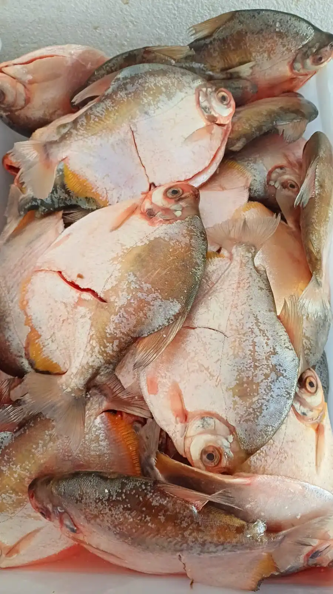
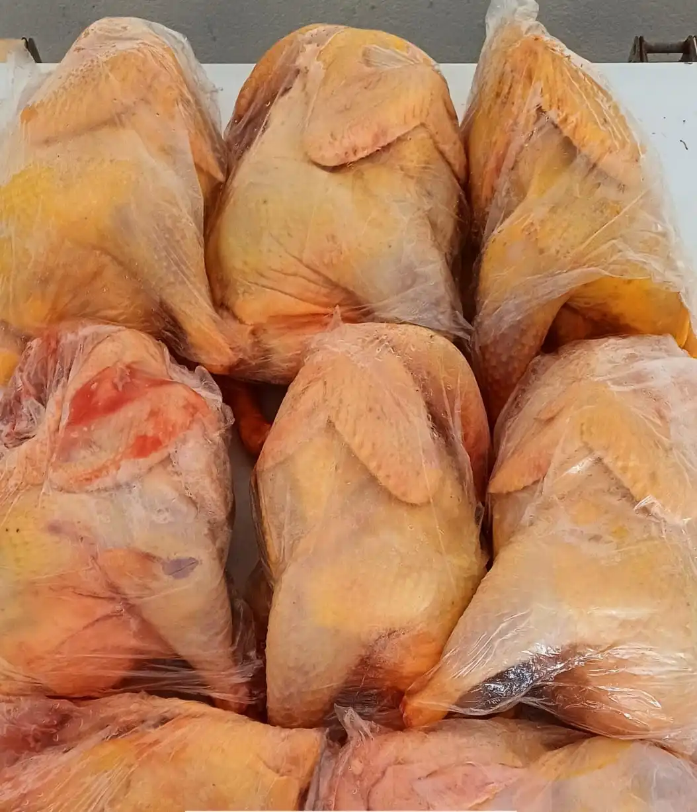
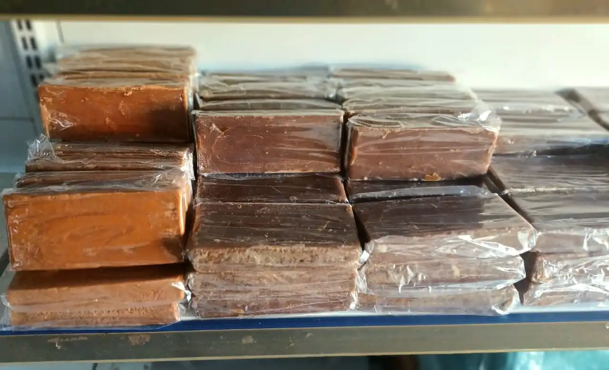
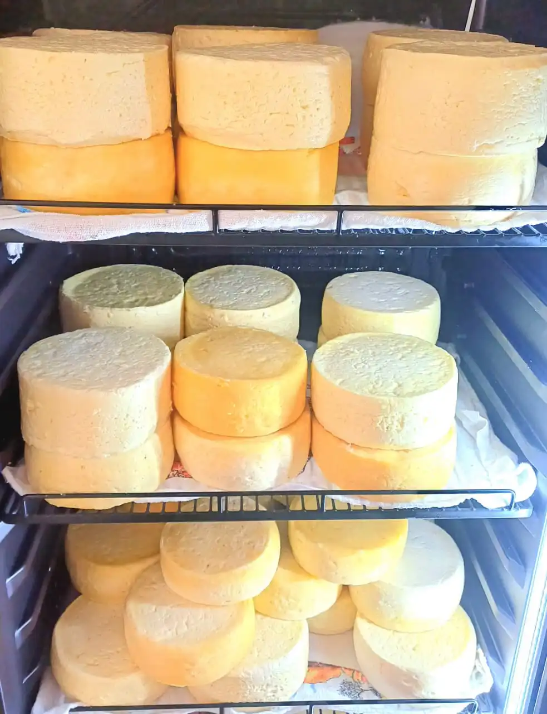
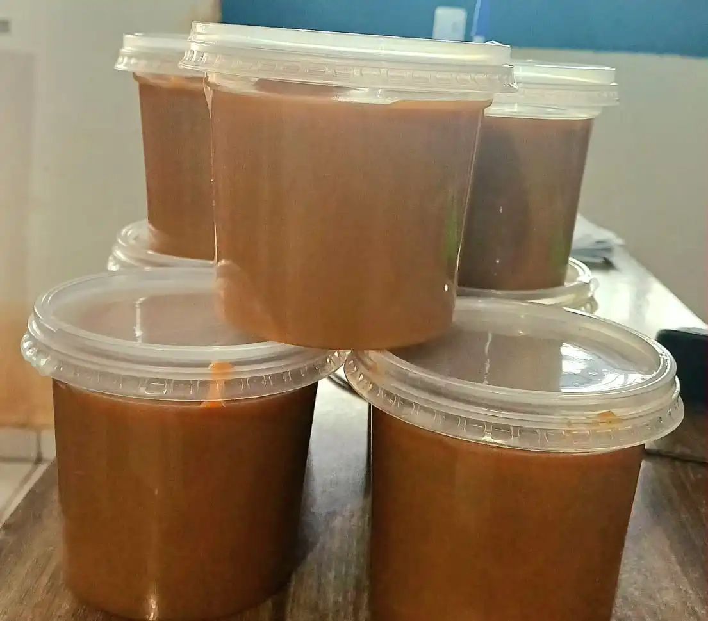
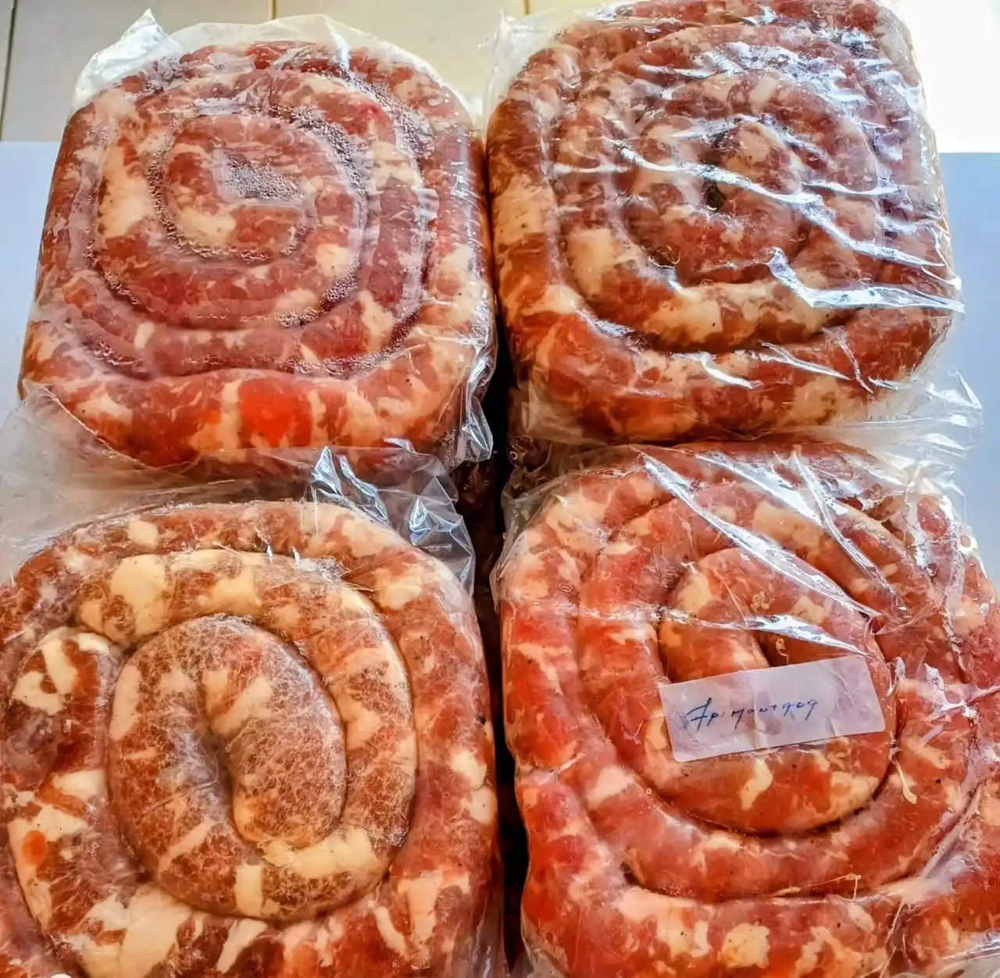

Rio

Pintado Fresco
Pseudoplatystoma corruscans
O rei do Rio Paraguai. Carne firme, saborosa e com pouquíssimas espinhas. Disponível inteiro, em postas ou em filé.
Peixes frescos, produtos artesanais e carnes caipiras direto do Pantanal.
Trabalhamos com produtos frescos, sazonais e respeitamos o período da Piracema. A disponibilidade de alguns itens pode variar. Consulte-nos no WhatsApp para confirmar o estoque do dia!
Pseudoplatystoma corruscans
O rei do Rio Paraguai. Carne firme, saborosa e com pouquíssimas espinhas. Disponível inteiro, em postas ou em filé.

Piaractus mesopotamicus
Sabor marcante e carne suculenta. Disponível inteiro, retalhado ou em ventrecha — a parte mais gordurosa e apreciada.

Metynnis spp.
Primo menor do Pacu, com carne delicada e saborosa. Excelente frito inteiro com limão e sal grosso.
Leporinus macrocephalus
Peixe típico da bacia do Paraguai. Carne macia e sabor suave, ótimo assado inteiro ou em postas no ensopado.

Pygocentrus nattereri
Sabor forte e marcante, muito apreciada frita ou em caldo. Uma experiência gastronômica genuinamente pantaneira.

Peixe de couro muito saboroso. Disponível inteiro ou em posta.

Oreochromis niloticus
Criada em tanque sustentável. Sabor suave e versátil, disponível inteira ou em filé sem espinhas — ideal para toda a família.

Criado solto na roça com ração natural. Carne suculenta e saborosa em vários cortes: costela, pernil, suan e muito mais.

Criado solto com ração caseira. Carne firme e saborosa, disponível inteiro ou picado, caipira ou semi-caipira.

Pura e artesanal, perfeita para refogar, fritar e dar sabor às receitas de roça. A gordura que o campo conhece.

Feita com caldo de cana puro, sem conservantes. Disponível nos sabores Cana Tradicional, Doce de Leite e Coco.

Produzido na fazenda com leite puro e processo artesanal. Sabor autêntico do campo, feito com tradição.

O autêntico sabor da roça. Escolha entre o tradicional doce de leite cremoso, com coco, em tablete ou o famoso Doce Cachorrada pantaneiro.

Produção própria, temperada na medida certa.

Curada ao sol, perfeita para o arroz carreteiro.

Conservas artesanais com pimentas selecionadas da nossa horta.